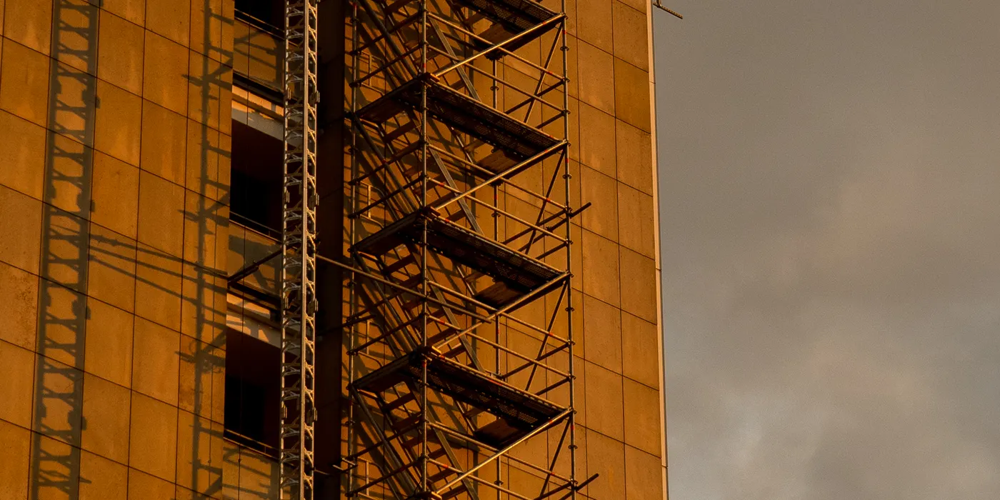
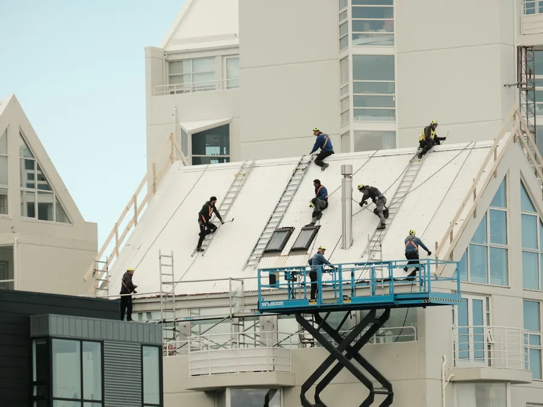

Fasad & puts · Stockholm sedan 2004
Fasad som håller i tjugo år till
Vi tvättar fasaden, lagar sprickorna, lägger ny puts eller byter träpanel och målar två strykningar med fasadfärg. Ställningen står kvar under hela arbetet, och grannarna får skriftlig information innan vi sätter upp den. En fasad på 210 m² på Södermalm landade på 520 000 kr och tog 8 veckor.
Vad en fasad kostar och tar
Rätt grundarbete är det som avgör hur länge färgen sitter
Vi börjar alltid med en provyta. Där ser vi om fasaden behöver bara tvätt och färg, eller om puts och panel måste bytas i delar.
Priset per kvadratmeter beror på tre saker: vilket ytskikt fasaden har i dag, hur många sprickor och lösa partier som måste lagas, och hur mycket fönster, hängrännor och stuprör som ska ingå. En fasad med lös puts under färgen ser billig ut i kalkylen, men färgen släpper inom ett par år om underlaget inte åtgärdas först.
Ett hus håller normalt 25 till 40 år mellan två stora fasadarbeten. Är fasaden från 80- eller 90-talet är den oftast mogen nu, och då är det bättre att ta hela fasaden i en etapp än att måla om varje sida för sig. Vi arbetar i en etapp per fasad för att ställningen ska hyras in en gång och stå kvar hela tiden.
Radhus från 80 m², villor kring 200 m² och flerbostadshus upp mot 300 m². Ytan mäts på fasadens hela area.
Färgen behöver torrt väder vid målningen. Regnar det skjuter vi på strykningen i stället för att måla över fukt.
Efter besiktning lämnar vi fast pris på hela arbetet, skriftligt inom 24 timmar på vardagar.
Omfattning
Vad som ingår
- Ställning och skydd. Byggnadsställning med skyddsnät monteras och kontrolleras, och mark, altan och planteringar täcks innan arbetet börjar.
- Högtryckstvätt av hela fasaden, inklusive algtvätt där det behövs. Färgen sitter bara på ett rent underlag.
- Lagning av sprickor och löst bruk. Vi knackar igenom ytan, tar bort löst material och fyller med bruk som rör sig som fasaden i övrigt.
- Puts: nytt ytskikt på lagade partier, eller puts i flera skikt där underlaget är dåligt. Fasaderna dras med samma kornstorlek som originalet.
- Träpanel: byte av rötskadade brädor och foder i tryckimpregnerat virke med rätt profil, spikat med rostfritt eller varmförzinkat.
- Grundning och målning med fasadfärg avsett för underlaget, två strykningar med torktid mellan. Fönsterfoder och dörrfoder målas i samma nyans.
- Fönsterbyte vid behov: nya fönster med energiglas monteras, tätas och fogas mot fasaden.
- Hängrännor och stuprör kontrolleras, rensas och byts i de delar där fallet är fel eller rännan är otät.
- Slutkontroll av hela fasaden mot underlaget, med foton på varje sida. Protokollet följer med i dokumentationen.
- Slutbesiktning med anmärkningar åtgärdade och 5 års garanti enligt AB 04.
Det här ingår inte: färg och material som du köper själv, byte av fönster utöver de antal vi kommit överens om, balkongräcken från annan leverantör, och markarbete runt huset som schaktning och dränering.
Inte heller sanering av asbest eller PCB i hus byggda före 1982, bygglov för inglasning eller fönsterbyte mot gata där fasaden är ändrad sedan 1990, och utvändig el som utegivare eller armaturer. Ser vi något av det stannar arbetet och vi lämnar ett separat skriftligt förslag innan vi går vidare.

Vecka för vecka
Tidsplan: provyta vecka 1, ställningen ner vecka 8
Ställningen står under hela arbetet, från montering i vecka 2 till rivning i vecka 8. Under de veckorna är en del fönster övertäckta några dagar i taget när vi målar foder och karmar.
Besiktning och provyta
Vi mäter fasaden, knackar igenom putsen och tar en provyta på ett undanskymt parti. Du ser resultatet innan vi räknar på hela arbetet, och du får en tidplan i veckor. Grannarna får skriftlig information om ställningen samma vecka.
Ställning, tvätt och lagning
Ställningen monteras med skyddsnät och marken täcks. Sedan högtryckstvättar vi hela fasaden och låter den torka. Alla sprickor och lösa partier hackas ur och fylls med bruk innan nästa skikt läggs.
Puts eller träpanel
Putsas fasaden dras de lagade partierna ut i samma kornstorlek och struktur som originalet. Är det träpanel byter vi rötskadade brädor och foder, monterar med luftspalt och grundar innan panelen sätts tillbaka.
Målning, hängrännor och rivning av ställning
Grundning och två strykningar fasadfärg, i torrt väder. Foder, karmar och hängrännor målas i samma nyans. Vi gör slutkontroll mot underlaget, fotar varje sida och river ställningen. Slutbesiktning bokas inom 5 arbetsdagar.
Kostnadsintervall
Kostnadsintervall per kvadratmeter fasad
Alla siffror är kr utan moms och gäller entreprenad i Stockholmsområdet 2026. Efter besiktning lämnar vi fast pris på hela arbetet.
- Träpanel, tvätt och två strykningar1 600–2 200 kr/m²
- Träpanel med panelbyte på delar av fasaden2 200–2 600 kr/m²
- Puts, lagning av sprickor och målning1 900–2 900 kr/m²
- Puts med nytt ytskikt på större partier2 900–3 400 kr/m²
- Tillval, fönsterbyte per fönster9 500–19 000 kr/st
| Yta | Prisintervall | Tidsplan | Kommentar |
|---|---|---|---|
| 80 m² | 130 000–270 000 kr | 3–4 veckor | Radhus, en fasad, oftast träpanel. |
| 120 m² | 195 000–405 000 kr | 4–6 veckor | Parhus, puts med några sprickor. |
| 210 m² i Södermalm | 520 000 kr | 8 veckor | Genomfört 2025, fast pris utan tillägg. |
| 250 m² | 400 000–850 000 kr | 7–9 veckor | Villa med tre fasader och fönsterbyte i delar. |
| 300 m² | 480 000–1 000 000 kr | 9 veckor | Flerbostadshus, ställning på gårdssidan. |
Ändringar beställs skriftligt innan de utförs, så att sluträkningen stämmer med det fasta priset. Vill du prova din egen yta direkt finns kostnadskalkylatorn.
Arbetssätt
Så gör vi
Mikael Lindqvist besiktigar fasaden och sätter det fasta priset. Han har 28 år i branschen och tittar på underlaget, inte bara på färgen. Vi tar en provyta på varje fasad vi räknar på, så du ser strukturen och nyansen innan du bestämmer dig.
Vi informerar grannarna skriftligt innan ställningen monteras, med datum för montering och rivning och vårt telefonnummer under arbetet. Alla på bygget har ID06 i bröstfickan, och vi har 10 000 000 kr i ansvarsförsäkring hos Trygg-Hansa om något skulle hända.
Fasaden mäts på hela arean, inte bara på den del som syns från gatan. Tidsplanen skickas ut i vecka 1 och vi håller den genom att arbeta i en etapp per fasad. Regn som stoppar målningen flyttas till nästa torra dag och påverkar inte priset.
- Fast pris innan ställningen monteras
- Provyta på varje fasad, så att du ser resultatet först
- Skriftlig granninformation med datum för montering och rivning
- Skriftlig tidplan i veckor, utskickad i vecka 1
- Ett telefonnummer till arbetsledaren under hela arbetet
- Foton på varje fasad i slutdokumentationen
- Ändringsarbete beställs skriftligt innan det utförs
- 5 års garanti enligt AB 04 och ansvarsförsäkring hos Trygg-Hansa
Frågor och svar
Frågor om fasad och puts
Behöver grannarna informeras?
Ja. Vi skickar skriftlig information till alla boende i huset och till närmaste grannar minst en vecka innan ställningen monteras. Där står datum för montering och rivning, hur länge arbetet pågår och telefonnumret till arbetsledaren.
Behöver en bil flyttas från uppfarten för att vi ska komma fram med ställningen säger vi till i god tid. På Södermalm och i Vasastan söker vi dessutom ställningstillstånd och tar hand om parkeringsdispens när kommunen kräver det.
Hur länge står ställningen?
Ställningen står under hela arbetet, normalt från vecka 2 till vecka 8 på ett hus kring 200 m². Vi hyr in den en gång och river den först när slutkontrollen är gjord, i stället för att montera och riva mellan varje moment.
Under de veckorna är en del fönster övertäckta några dagar i taget när vi målar foder och karmar. Du kan bo kvar hela tiden, och du kommer åt ytterdörren varje dag.
Vad kostar en fasad på 200 m²?
Mellan 320 000 och 680 000 kr utan moms, beroende på om det är puts eller träpanel och hur mycket som måste lagas. Puts ligger på 1 900–3 400 kr/m² och träpanel på 1 600–2 600 kr/m².
Ett färdigt exempel: fasad 210 m² på Södermalm, 520 000 kr och 8 veckor. Vi lämnar prisintervall efter besiktning och skriftligt fast pris inom 24 timmar på vardagar.
Snittbetyg 4,8 av 5 över 63 omdömen. Vi har genomfört 312 projekt i Stockholmsområdet sedan 2004 och arbetar med kollektivavtal Byggnads.
Nästa steg
Andra tjänster
Boka kostnadsfri besiktning av fasaden
Vi mäter ytan, tar en provyta och lämnar skriftligt förslag inom 24 timmar på vardagar. Besiktningen tar cirka 60 minuter och du binder inget.
Grundat 2004 · 312 projekt i Stockholmsområdet · ID06 på alla på bygget · 5 års garanti enligt AB 04